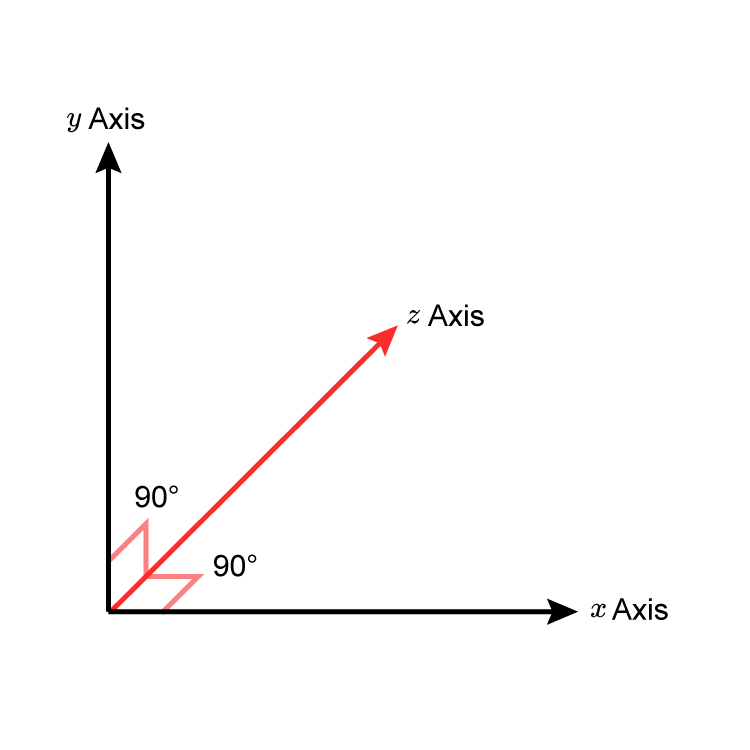
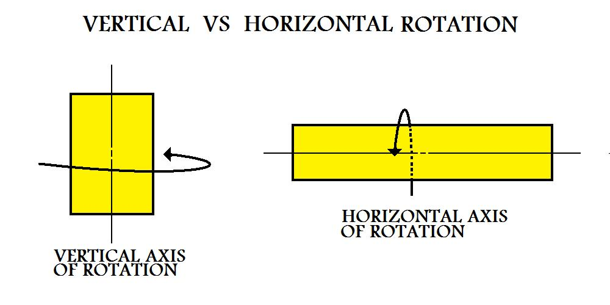
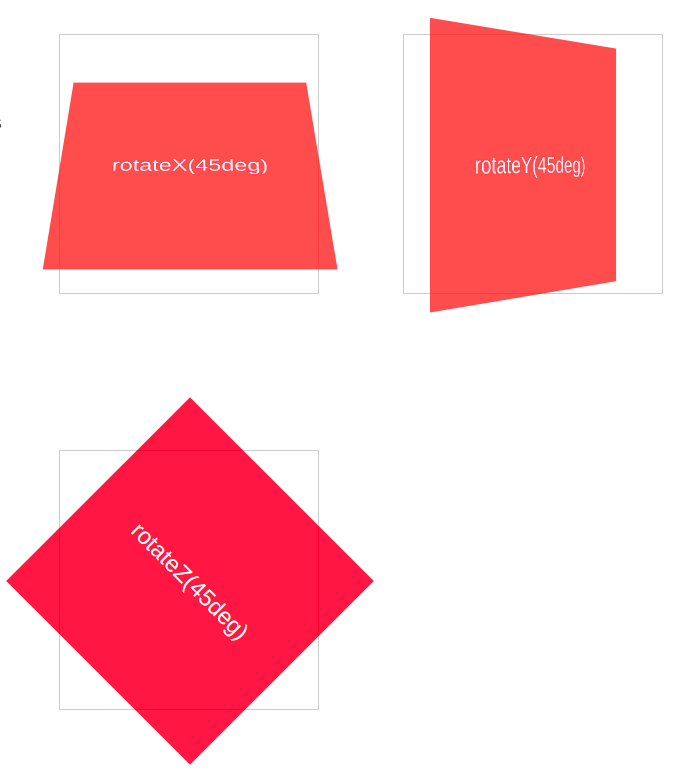
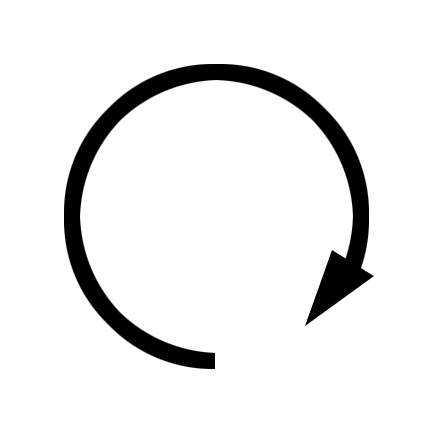

transform- rotateX(),rotateY(),rotateZ()
What they do? Those rotate an element clockwise around the x/y/z-axis,
while a negative value would rotate it in the opposite direction.



transform:rotateX(angle)
transform:rotateX(0deg)

transform:rotateX(180deg)
transform:rotateY(angle)
transform:rotateY(0deg)
transform:rotatey(180deg)
transform:rotateZ(angle)
transform:rotateZ(0deg)
transform:rotateZ(50deg)